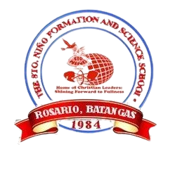
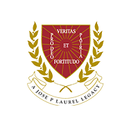

Niña Marie I. Din
Information Technology Student
About
 Get to Know Me
Get to Know Me
Niña Marie I. Din, currently a Third Year College Student at Batangas State Univeristy - Alangilan Campus Major in Service Management. One of my goals is to finish my studies and check my bucket lists in life.
 Coding
Coding
I started with HTML a Mark-Up Language, then it progresses to C++ as my first programming language when I entered the collegiate year in 2020. Thus, a programming language such as Python.
 Hobbies
Hobbies
Hobbies that I enjoy is my me time, just me enjoying my leisure time. Talking or hanging out with friends in our free time. Also, watching K-dramas is one of my hobbies.
Song: My Mind and Me
Artist: Selena Gomez
Educational Attainment
|  |
Primary Education Sto. Niño Formation and Science School |
|---|
Junior High School Education Sto. Niño Formation and Science School |
|---|
|  |
Senior High School Education Lyceum of the Philippines University – Batangas |
|---|
College Education Batangas State University - Alangilan |
|---|